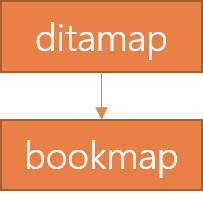

A bookmap is a specialization of a DITA map and is meant to be used when you intend to publish your documents in a book format. It contains structure and metadata, but no content. It is especially designed to create output in book-style formation and therefore includes the following major structures:
title
bookmeta (owners, authors, publishing data,…)
front matter (acknowledgements, definitions, abbrevations,…)
chapters and parts
appendix topics
back matter (index, notices, lists,…)
relationship tables

Purpose of a bookmap
A bookmap is best suited for when you specifically want to create output in the traditional form of a book. Its template allows you to organize your content in a book format by adding, among others, chapters, parts and appendixes.
Note: Bookmaps are not suited for output formats other than traditional book formats. If you are planning different types of output, you should consider using a regular DITA map and including book metadata by using the elements and attributes in the <topicmeta> element.
You use DITA to publish a research paper, so you write your information in a bookmap and add the necessary chapters. You can now make use of, for instance, the frontmatter to add a cover and the backmatter for glossaries.